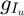
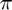
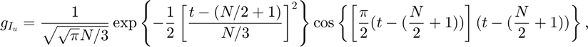
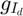
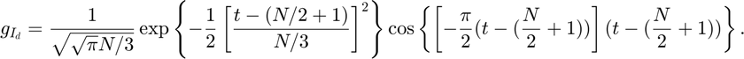

Noise Robustness Experiments
Perform multi-component estimation of noisy signals using MPEM and MLE algorithms, and save the raw data for subsequent analysis. See the code.
Contents
Set parameters
First, set the parameters of chirplet signals. The signal used in testing consists of two components, an upward chirplet  with the instantaneous frequency changing from 0 to ,

and a downward chirplet  with the instantaneous frequency changing from to 0,

N = 100; % signal length P = [1*exp(1i*0), N/2+1, pi/2, pi/N, N/3; % up-chirplet 1*exp(1i*0), N/2+1, pi/2, -pi/N, N/3]; % down-chirplet s = make_chirplets(N, P); % the complex signal
Next, set the parameters for multi-component estimation. We test the robustness of the algorithms at six desired SNR points, i.e. -30, -20, -10, 0, 10, and 20 dB. We also check the performance of algorithms with clean signals (i.e. SNR = Inf). The test is repeated 100 times at each testing SNR.
d_snr = [-30:10:20, Inf]; % central values of desired SNR num_test = 100; % number of test at each test point
Multi-component estimation with MPEM and MLE algorithms
The estimated parameters of the chirplets are in P_hat.
Q = size(P, 1); % number of chiprlets to be estimated [snr_hat, tcost, P_hat] = noise_robust_test(s, Q, d_snr, num_test); % both MPEM and MLE algorithms
Fianlly, save the raw data in noise_robust_data.mat
save('noise_robust_data.mat', 'P', 's', 'd_snr', 'snr_hat', 'tcost', 'P_hat')
Then analysis is performed in Noise Robustness Analysis.